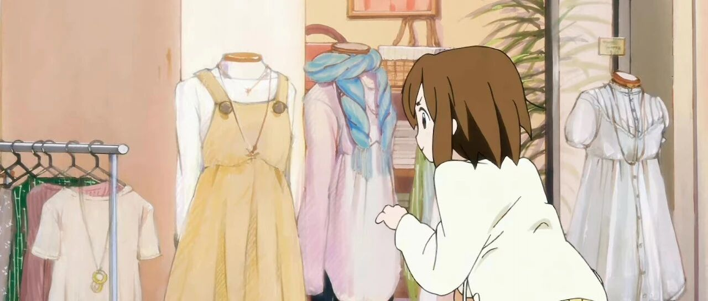

攻略｜手把手教你极简！衣橱换季四步法（胶囊衣橱）
点击关注 秋秋很开心
每周一篇好用App、学习、成长干货
图：@秋秋
文：@秋秋
大家好，我是秋秋。
今天又是一期干货！极简衣橱真的是太爽了！
整理之后，不仅对自己的衣服心中有数，搭配起来毫不费力。

还因为留下的都是精选款，买衣服的时候也不冲动，不知不觉省下一大笔！
总之双脚离地了，智商又占领高地了...

不不不，是衣服心中有数了，干啥都得心应手了！
1.展示成果
我的胶囊衣橱现在是这个样，比之前又升级了。

你可以清晰的看到自己所有的物品。
上衣几件，鞋子几双。
就算搬家，也对物品非常有数！
我还根据不同季节不同场景做搭配：


我的风格有酷一点的，也有简单一点的。
极简是为了让我们心中有数，但不就限定了你的穿搭风格。
建议看完全文，大家也做好图片保留相册。
当你在想买衣服，随手打开。
发现自己有一件一样风格的，遂弃之购买欲望。
还有买单品。
也要看和衣橱已有更个是否搭配。
实用主义，取代之前的冲动消费。
那，我就从头教大家怎么做胶囊衣橱吧。
2.整理衣橱
胶囊衣橱分为2步，第一步先整理衣橱，第二步制作图片（更有利于心中有数）。
整理衣橱用到衣橱整理四步法。
网上都有，也很简单🐶
01
第一步：清空衣橱🌷
把你的所有衣服掏空！

如果数量太多，也可以只整理冬季的。
这里为什么清空？
是因为我们要了解衣服的数量，直观的拿出来，才能意识到，是不是要极简了。
02
第二步：分类🛍
这一步比较简单，但是工作量很大。
是要按照类别，把衣服分好。
羽绒服、毛衣、连衣服、裤子👖

可以不用叠，只要分类就好。
但是注意，分的过程发现衣服已经起球、变形、破烂，要专门放一堆，叫“物尽其用堆”。
03
第三步：收起📦
分类完成，就要进入收纳环节。
说是收纳，这一步就是关键，断舍离。

分类后再决定衣服的去留？是更好去对比。
同样是上衣，肯定有哪个穿的多，哪个各穿的少。
哪个更好搭配，哪个喜欢却没怎么穿。
这时候，认真想一想，哪些衣服是可以放进衣橱的？
不用想哪个该丢，对于新手太难了。

你可以给自己制定标准，我的参考：
（1）突然约会，这件衣服我能直接穿出去
（2）这件衣服能搭配很多其他衣服
（3）这件衣服比较新，是我喜欢的款式
那有的衣服虽然不约会、不能搭配很多，就是舒服，喜欢呢？
不用扔！
我的方法是当家居服就好了。
在你不超过3-5公里活动、下楼玩、周末不想出门。
穿睡衣又不太方便，就穿这些衣服。
慢慢物尽其用就舍得扔了。
04
第四步：归位💕

现在你会得到3大类衣服。
一类可以放衣橱的，一类物尽其用（可以直接丢的）、一类还有剩余价值当家居服的。
怎么收纳？
先按照四季，其次颜色深浅。
再衣服从短到长。

叠衣服、悬挂技巧，大家可以看相关视频，这里我就不赘述。
总之，收纳好，你的衣橱都是你喜欢的。
做到这里就很完美。
3.制作图片
上一步完成后，你的衣服也许没有像其他博主那样，只有10件、20件。
但只要每一件是喜欢的，东西物尽其用，就是极简。
这时候，最后一步，做成图片。
1
电脑
我衣服大多网上买的，线下买，品牌淘宝店也有衣服白底图。

保存下来。
用sketch，一款像ps一样的做图软件，一个个拖进画布里就好了。

2
手机
也是衣服的照片保存下来，App是黄油相机：

新建一个白色背景，把衣服一个个放进来。
虽然麻烦点，费手，但可以完成以上的整理。

3
App
是更简单的方法，直接利用衣橱App。
比如：

在App里你就可以记录穿搭，还可以搭配衣服，非常方便。
总之，电子版保存，只会是你在买衣服、搭配的时候更简单。
如果每次买衣服都能看一下衣橱，自己搭配好衣服拍照保存，也是可以的。

以上，就是我的胶囊衣橱极简攻略啦！
极简，是更好的与喜欢的东西为伴。
目之所及，不为外物烦扰，人生都会越来越清晰。
希望这篇文章可以帮助大家，共勉。
秋秋其他关于极简的文章//
往期精彩内容：
作者介绍：
秋秋，24岁裸辞、25岁赚到第一个100w、26岁退休。
喜欢学习、探索、分享！很有能量！
关注星标秋秋，咱们一起过喜欢的生活～
原创文章，转载请告知本人并标注来源
工作联系：17865514429 （微信）
请注明来意 :)
@小红书、抖音、快手：秋秋很开心
喜欢记得星标，让我们一起成长